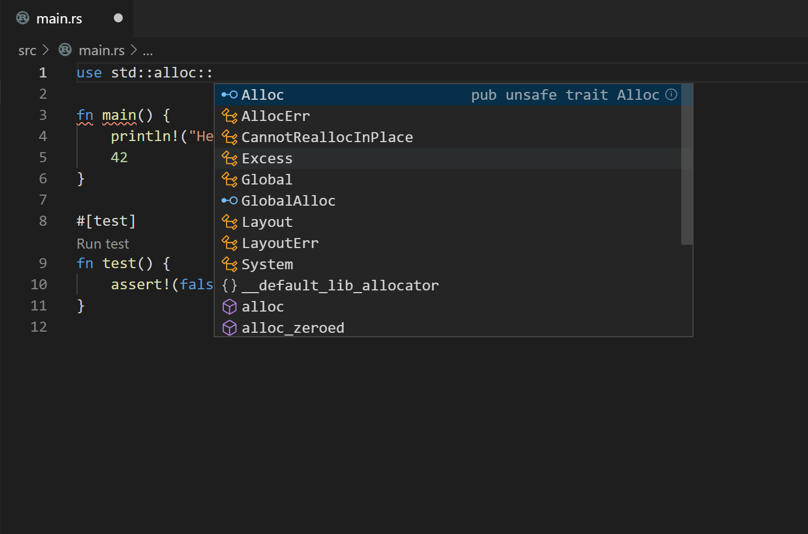

Installing Rust with Rustup
- Visit rustup.rs, to install the rust toolchain.
Choosing your editor
Whatever editor you choose, the goal is for you to have RLS and Code Formating (rustfmt) installed and enabled. VSCode is a mature and populare solution for Rust.
Configuring VS Code for Rust with the RLS
The steps below configure VS Code on Mac to support Rust and use the Rust Language Server (RLS) for autocompletion and incremental compilation to display warnings and errors.
-
Install the Rust (rls) extension by user 'rust-lang' in VS Code. There are several other plugins, but this one is the most maintained.
-
Reload the window in VS Code, or restart VS Code
-
If you see an error message that the RLS could not be started or that the extension could not find rustup, then you will have to configure VS Code's path for rustup:
-
Open VS Code preferences and navigate to the Rust extension preferences
-
Modify the rustup path to use an absolute path to your installation:
C:\Users\<username>\.cargo\bin\rustup
-
Reload the window in VS Code, or restart VS Code
-
You may see a prompt in the lower-right to install the RLS. If so, click yes.
-
-
Open a Rust file and test out the RLS:
- Try autocompletion (for example start typing
use std::) at the top of a file - Try the incremental compilation (for example
println!("Hello, world!") blah blah 42 42should show an inline error)

- Try autocompletion (for example start typing
-
Enable format on save in VScode settings. Code->Preferences->Settings->Text Editor->Formatting->Format On Save